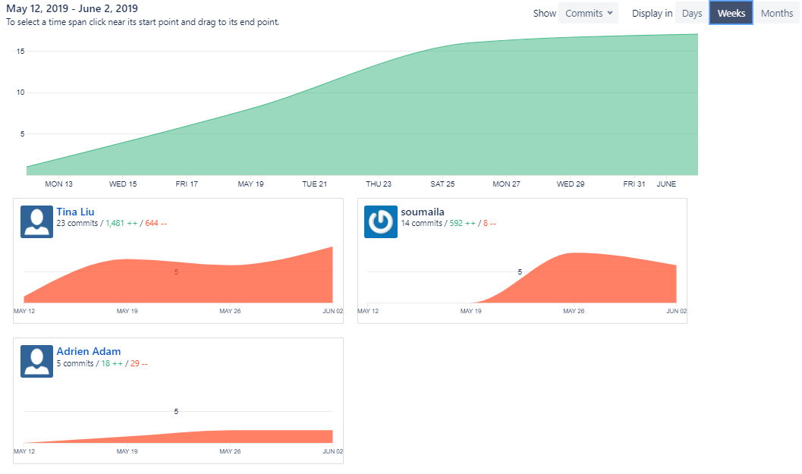

IFT 2255 - Été 2019 - Devoir 2
Style de page inspiré des énoncés des TPs du cours.
Table des matières
Équipe 6
Information générale
Nom: Adrien Adam
Matricule (4 dernier chiffre): 7980
Courriel: adrien.adam@umontreal.ca
temps mis: 8 heures
Nom: Soumaila Keita
Matricule (4 dernier chiffre): 5670
Courriel: soumaila.keita@umontreal.ca
temps mis: 8 heures
Nom: Tina Liu
Matricule (4 dernier chiffre): 2684
Courriel: tina.liu@umontreal.ca
temps mis: 8 heures
Distribution des tâches
Soumissionaire: Tina Liu
| Tâche | Adrien | Soumaila | Tina |
|---|---|---|---|
| Révision globale des exigences | 20 | 40 | 40 |
| Analyse | 20 | 40 | 40 |
| Diagrammes d'activités | 35 | 35 | 30 |
| Diagramme de classe | 10 | 10 | 80 |
| Diagrammes de séquence | 40 | 40 | 20 |
| Implémentation | 10 | 80 | 10 |
todo:changer le graphe des commits
Remarque (révision des exigences)
Le glossaire est mis à jour avec les mots qui sont apparus dans l'énoncé du TP-2 comme "Gérant", "TEF" et plusieurs autres.
Des modifications ont été apportés aux scénarios cas d'utilisation pour permettre plus de détails donnés dans l'énoncé du TP-2. De plus, des nouveaux cas d'utilisations ont été ajoutés comme le "Procédure comptable" et "Exécuter un synthèse". Par conséquent, le diagramme de CU est également modifié et le gérant est ajouté comme nouveau acteur.
Hypothèses
On suppose que les CUs sont nos objectifs principales à documentés. Les cas qui sont reliés à la gestion d'un objet ne sont pas documentés dans le diagramme de CU, mais le sont dans les diagrammes d'analyse et de conception.
On suppose également que les diagrammes fournis pour ce TP ne sont pas finals et que des changements seront à apporter aux diagrammes (forte emphase le diagramme de classe).
Tâche 1: Glossaire
Pour le glossaire, on a décidé de définir des mots-clés qui reviennent quelques à plusieurs fois dans les tâches du premier TP et qui reviendront certainement durant le processus de développement.
Solution
Nouveau
- Frais mensuels d'adhésion
- Le montant à payer à chaque mois pour continuer d’être un membre valide de #GYM.
- Frais d'inscription
- Le montant à payer pour assister à une séance de service fourni par un professionnel.
- Gérant
- Un individu est responsable du #GYM et de tout ce qui se passe dans le #GYM. Superviseur/employeur de l’agent.
- Compte payable
- Un compte qui doit être payé, c’est-à-dire un compte qui a fourni un service durant une semaine payable.
- TEF
- Abréviation de Transfert électronique de fond.
- Transfert électronique de fond
- Un fichier qui contient les données de transfert électronique de fond. Il contient le nom d’un professionnel, le numéro unique du professionnel et le montant à lui payer pour les séances fournies durant une semaine donnée.
- Rapport de gérant
- Fichier qui contient la synthèse des évènements et des comptes payables. Une liste de professionnel à payer, ainsi que le nombre total de services fournis durant la semaine et le total de leurs frais. À la fin, on voit le nombre de professionnels qui ont fourni un service durant la semaine, le nombre total de service fournis et le total des frais.
- Procédure comptable
- Procès qui est exécutée au Centre des Données #GYM chaque vendredi à minuit pour calculer les frais à payer aux professionnels qui ont fourni un/des service(s) durant la semaine et enregistre le résultat et d’autres informations nécessaires dans un fichier TEF. D’autre part, un rapport de synthèse du gérant qui concerne les comptes payables de la semaine et d’autres informations pertinentes sur la semaine est également exécuté avec les TEF.
- RnB
- Organisation tierce qui est responsable du traitement des paiements des frais d’adhésion.
- Agent
- Personnel de #GYM travaillant à la réception du centre. C’est auprès de lui que le client peut adhérer à #GYM. L’agent permet aussi au client de s’inscrire à des séances de sports ou des services fournis par des professionnels.
- Centre de données
- Endroit où toutes les données de tous les clients seront stockées.
- Réception
- Le poste à partir d’où le Centre de Données est accédé en majorité pour des cas d’utilisations par l’agent.
- Adhérer (à #GYM)
- Pour faire partie du centre, le client doit s’enregistrer à la réception. Il donne ses informations personnelles à l’agent, qui sera acheminé au Centre de Données.
- Numéro unique
- Identification d’un membre de #GYM.
- Professionnel
- Enregistré dans le Centre de Données similairement à un membre. Individu qui offre un/des service(s) au #GYM et possède le privilège de consulter la/les liste(s) d’inscriptions à sa/ses séance(s).
- Inscription
- Le client peut s’inscrire aux services d’un professionnel et/ou à un cours de sport. Pour se faire, le client doit se référer à la réception. L’agent lui montre l’ensemble séances disponibles dans le Répertoire des Services. Le client doit confirmer son inscription quand il sélectionne une séance. Il faut vérifier s’il n’y a pas de conflit d’horaire avec les séances dont le client va assister.
- Validation
- L’agent vérifie le numéro de membre du client pour valider l’accès du client, à chaque visite. Si l’abonnement est expiré, « Numéro invalide » sera affiché. Si le membre est suspendu, alors « Membre suspendu » sera affiché. S’il n’y a ni l’un ni l’autre, alors l’accès sera validé. Cette information sera vérifié dans le Centre de Données.
- Répertoire des Services
- Endroits où toutes les séances disponibles sont stockées.
- Fournir un service
- Un professionnel doit voir l’agent pour que celui-ci créer une séance de service ou d’activité. L’information sera stockée dans le Centre de Données. Si le professionnel est nouveau, l’agent lui créer un compte comme un client.
- Activités physiques
- On entend par activité physique tout mouvement produit par les muscles squelettiques, responsable d’une augmentation de la dépense énergétique.
- Séance de service
- Une période d’activité (physique ou non), ou de consultation donnée par un professionnel, identifiée par un code de service
- Code de service
- Séquence de 7 chiffres qui identifie une séance de service.
- Consultation de service
- L’agent montre au professionnel les inscriptions à sa séance. Une requête est envoyé au Centre de Données pour vérifier cette information.
- Confirmation
- Le client doit confirmer sa présence avant qu’une séance commence. L’agent confirme la présence dans le Répertoire des Services. En faisant cela, une requête est envoyée au Centre de Données pour vérifier si l’inscription est valide.
Tâche 2: Diagramme des cas d'utilisation UML
Solution
Nouvelle version (TP-2)

Table des matières
Ancienne version (TP-1)
On a simplement pris en considération tous, ou sinon une grande partie, les cas possibles d'utilisation du système à partir de l'énoncé.
Table des matières
Tâche 3: Scénarios des cas d'utilisation
Note pour le TP2: Les modifications sont en caractères gras.
On suppose également que: l'agent sait déjà comment utiliser le logiciel et que le système est déjà près à recevoir des donnnées au moment des cas d'utilisation. les clients ont tous ce qu'il faut pour créer un compte Le client est déjà présent à la réception avec l'agent le système et la machine sur laquelle le système opére fonctionnent correctement
Solution
Nouveau
But: Créer des fichiers TEF pour permettre le traitement des paiements des frais aux professionnels qui ont fourni un/des service(s) durant la semaine et exécuter un synthèse.
Pré-conditions: Les enregistrements de confirmation doivent être bien formattés et disponibles d’accès. Le système doit être fonctionnel. Ça peut seulement s’exécuter les vendredi à minuit.
Acteurs: Aucun
Scénario principal:
2. Trier les enregistrements par séance, puis par professionnel. Retirer les doublons (deux séances qui offrent le même service durant la même période de temps). 3. Regrouper les séances, puis générer les enregistrements sur le disque sous forme de données de transfert électronique de fond (TEF).
3.2. Le fichier TEF contient le nom du professionnel, son numéro unique et le montant à lui transférer pour les services qu’il a fourni de la semaine.
3.3. Ranger le fichier dans un répertoire dédié à stocker les TEFs de la semaine.
1.a.2. Retourner une exception.
But: Générer un rapport qui contient les informations pertinentes sur la semaine pour des raisons administratives, commerciales ou autres.
Pré-conditions: Le gérant est validé comme gérant.
Acteurs: Gérant (principal) ou CU « Exécuter procédure comptable » (principal)
Scénario principal:
2. Produire un rapport de synthèse basé sur ce fichier.
Modifications
But: Le client adhère à #GYM
Pré-conditions: L'organisation RnB qui gère les paiements est actif/opère.
Acteurs: Le client (secondaire) et l’agent (principal)
Scénario principal:
2. L’agent entre les informations du client sur son ordinateur.
3. Les informations sont acheminées au Centre de Données.
4. Le client paie les frais d’adhesion
5. Le Centre de Données créer le nouveau membre et lui assigne un numéro unique.
But: Le client veut visiter le Gym
Acteurs: Le client (secondaire) et l’agent (principal)
Préconditions:Le client est un membre et que le Centre de Données fonctionne bien.
Scénario principal:
2. Le client donne son id a l’agent.
3. L’agent valide l’id et ouvre le tourniquet.
3.a.1. Le membre est suspendu (frais impayé).
3.a.2. Il paye les frais on revient à l'étape 3.
But: Le client veut participer à une séance
Préconditions: Le client doit avoir adhéré à #GYM. On doit pouvoir accéder aux services.
Acteurs: Le client (secondaire) et l’agent (principal)
Scénario principal:
2. L’agent consulte le Répertoire des Services et montre les disponibilités au client.
3. Le client choisit une séance.
4. On affiche les frais pour la séance.
5. Le client confirme son inscription.
6. Le logiciel créer un enregistrement sur le disque contenant les informations importantes.
Table des matières
Solution du TP-1
But: Un profesionnel veut offrir une séance
Pré-conditions:Le service à rechercher existe. Le professionnel a un compte au #GYM.
Acteurs: Le professionel (secondaire) et l'agent (principal)
Scénario principal:
2. Le professionnel donne les informations de la séance à l’agent.
3. L’agent envoie les informations au Centre de Données.
4. Le logiciel créer la séance.
1.2 L’agent créer un compte #GYM pour le professionnel. Le scénario principal reprend au point 2
But: Vérifier si le numéro unique donné par le membre est valide ou non
Préconditions: Le système est en marche.
Acteurs: Le membre (secondaire) et l’agent (principal)
Scénario principal:
2. L’agent entre ce numéro sur le logiciel pour la vérification par la console.
3. Le numéro est validé par le logiciel et confirme que le client est adhéré au #GYM.
But: Aider un membre à consulter la liste des services offertes à #GYM par des professionnels
Pré-conditions:La personne qui accède au Répertoire est un individu autorisé. Connaître où est situé le Répertoire des Services. Le système est en marche.
Acteurs:Agent (principal) et/ou un membre (secondaire)
Scénario principal: L’agent
2. L’agent montre et navigue sur le Répertoire des Services à la guise du membre.
2.2. Toutes les informations sur la séance s’affiche sur la console
2.1.a. La séance est inaccessible ou n’existe plus (le Répertoire des Services n’est pas mis à jour) et on repart à l’étape 2.
2.3.a. Le membre veut s’inscrire à la séance qui s’affiche. Aller au cas d’utilisation « Le client s’inscrit à la séance » ou « Inscription à une séances ».
But: Le client va participer à une séance
Pré-conditions: La séance à rechercher existe de même que pour le service qui lui est associé. Le client possède un compte membre.
Acteurs: Le client (secondaire) et l’agent (principal)
Scénario principal:
2. L’agent recherche le bon code de service correspondant au service approprié.
3. Aller à "Valider le numéro de membre".
4. Le Logiciel créer la confirmation en avance que le service a été fournie.
5. Le client assiste à la séance.
6. Le client quitte la séance.
3.2 L’accès du client à la séance est refusé. Le scénario reprend au point 7.
But: Aider un professionnel à consulter la liste des inscriptions à une de ses séances
Pré-conditions: Le professionnel possède un compte professionel au #GYM. Il doit fournir un service au moins.
Acteurs: L'agent (principal) et le professionnel (secondaire)
Scénario principal:
2. L'agent entre son ID au système.
5. Si le professionnel désire consulter un autre de ses séances, l'agent retourne à l'étape 3.
But: Créer un compte professionnel
Pré-conditions: Le nouveau professionnel ne possède pas de compte professionnel...
Acteurs: L'agent (principal) et le professionnel (secondaire)
Scénario principal:
2. Il entre toutes les informations au système selon un certain processus.
Table des matières
Tâche 4: Risques
Dans notre solution, on mentionne quelques contextes spécifiques en supposant les prochains points suivants:
- Il est dit que l'agent interagit avec le système par la console. On suppose qu'une certaine séquence de commandes est nécessaire pour le déclenchement d'un cas d'utilisation et que le gym n'est pas renseigné sur la formation d'un agent.
- On a également supposé que le système est installé sur une seule machine, la machine utilisée par l'agent à la réception dy gym.
- Puisque les données seront enregistrées dans un fichier, on mentionnne deux risques sur la sécurité.
- Puisque les exigences fonctionnelles ne sont pas précisées, on mentionne deux cas spécifiques mais importants à régler. Un des cas relie aux risques de sécurité.
Solution
Voici les risques que nous avons identifié selon l'ordre de sévérité:
- Puisque les données sont entrées dans la console (la ligne de commande), l'agent ne peut seulement entrer qu'une donnée à la fois. Ne pas connaître l'ordre des entrées peut entraîner des erreurs, puis l'arrêt du système. (Un agent devra apprendre comment utiliser le système, il lui faut un manuel d'utilisation).
- Risque d'un étranger au contrôle du système sans la permission de l'agent. Aucun critère ou code d'accès assigné à l'agent pour valider son entrée au système. L'étranger pourra accéder à toutes les données du système.
- En assumant que le système est installé sur seulement une machine, si cette machine se brise ou ne fonctionne plus pour des raisons quelconques, on risque de perdre le système totalement.
- Puisque les comptes des membres et des professionnels sont identifiés par leur numéro unique seulement, les cas de fraude et de vol d'identité risquent la sécurité des clients du #GYM.
- Il n'y a pas de mécanismes de modification après la création d'une séance. Donc, si l'agent crée une séance avec les mauvaises informations, des clients vont s'enregistrer à une séance que le professionnel n'a pas voulu créer.
Tâche 5: Exigences non-fonctionnelles
On liste quelques exigences qui ont été identifiées durant le travail sur le TP et qui n'ont pas été directement précisées dans l'énoncé du TP. Cela nous aide également à comprendre comment le système va fonctionner et offre une vue claire de comment le logiciel sera développé.
Solution
Voilà notre solution:
- La validatibon d'un numéro de membre et la confirmation de la présence d'un membre à une séance doivent se faire dans moins de 10 secondes (contrainte sujette à des ajustements).
- Le numéro d'un membre validé ne peut être re-validé qu'après une heure pour ne pas laisser plusieurs personnes rentrer en même temps sous le même numéro de membre.
- Un membre régulier ne devrait pas être capable de consulter une liste d'inscription à une séance. On distinguera un membre régulier d'un professionnel par un attribut de classe.
- Pour les cas d'utilisations associés à un membre ou un professionnel, l'agent s'assure de confirmer que le client est bien un membre ou un professionnel du gym avant de continuer.
- Les entrées de données pour chaque cas d'utilisation suivent un certain ordre et un certain format pour pour éviter des exceptions/crashs non prévues. Il faut donc un manuel d'utilisation bien écrit.
Tâche Bonus TP1: Implémentation d'un prototype
Le prototype a été déplacé à la Tâche 10!
ObsoletePour utiliser le prototype, suivez-les options qui sont affichées durant son exécution!
Voici le fichier
Personne.java Membre.java Professionnel.java
Tâche 6: Analyse (Brouillon)
En principe, on a besoin d'informatiser les utilisateurs (agent et gérant) et les acteurs secondaires (membre et professionnel), puis les stocker dans quatres listes (une pour agent, gérant, membre et professionel) dans le Centre de Données. On veut aussi stocker les services (qui contiennent des séances) dans le Centre comme une liste également. Le système central a en principe des méthodes getters/setters et d'affichage. On veut aussi pouvoir gérer et vérifier les horaires des acteurs secondaires pour éviter des conflits d'horaire.
Le système #GYM va communiquer avec le Centre de Données via les méthodes getter/setter et va déclencher les CUs par les méthodes statiques (qui sont elles-mêmes déclenchées par les inputs de l'utilisateur).
Note
Notre diagramme de classe ne satisfait pas l'analyse ci-dessous, mais le reste du TP2 suit le diagramme de classe. La rédaction de l'analyse a été fait après la complétion des diagrammes. Pour la prochaine phase, on a l'intention d'adapter notre design à l'idée projetée le paragraphe suivant.
Table des matières
Tâche 7: Diagrammes d'activités
On suppose que l'agent est authentifié avant d'utiliser le logiciel comme le montre le diagramme principal et que la gestion des membres et des séances se font uniquement à partir de l'agent communiquant avec le système. Donc, on suppose que la validation d'un professionnel est déjà fait.
Solution
Diagramme principal
Ajouter/Modifier/Supprimer un compte membre

Ajouter/Modifier/Supprimer une séance

Inscription à une séance

Confirmation une séance

Procédure comptable
 Table des matières
Table des matières
Tâche 8: Diagramme de classe
Dans le diagramme de classe, on peut supposer que les getters/setters sont inclus pour tous les attributs et que les constructeurs prennent tous les attributs nécessaires comme paramètres. Si le dernier fait n'est pas accompli, cela veut dire que les attributs sont attribués par un setter.
On suppose que l'agent et le gérant ont besoin de s'authentifier avant d'utiliser le système, mais ceci n'est pas encore spécifié comme fonctionnalité. Donc, nous l'omettons du reste des diagrammes.
La classe Horaire n'est dans sa forme complète et clair. Donc, ce sera à contempler durant la phase d'implémentation.
Il est également discuté que l'implémentation directe de ce diagramme de classe est compliqué durant le développement du prototype et donc il n'est pas faux de dire que l'implémentation nous coûtera cher, faute de mauvaise conception. C'est un sujet qui demandera une réflexion juste avant la phase d'implémentation et qui apportera des changements majeurs dans notre conception.
Tâche 9: Diagrammes de séquence
Solution
todo : diagramme d'activités de Soumaila
Ajouter/Modifier/Supprimer un membre
Ajouter/Modifier/Supprimer une séance
Inscription à une séance

Confirmation d'une présence à une séance

Procédure comptable
Tâche 10: Prototype (Mise à jour)
Table des matièresPour utiliser le prototype, suivez-les options qui sont affichées durant son exécution!
Voici le fichier CentreDonnee.java qui est la base du prototype codé par Soumaila. Et voici les classes utilisées dans Main.java.